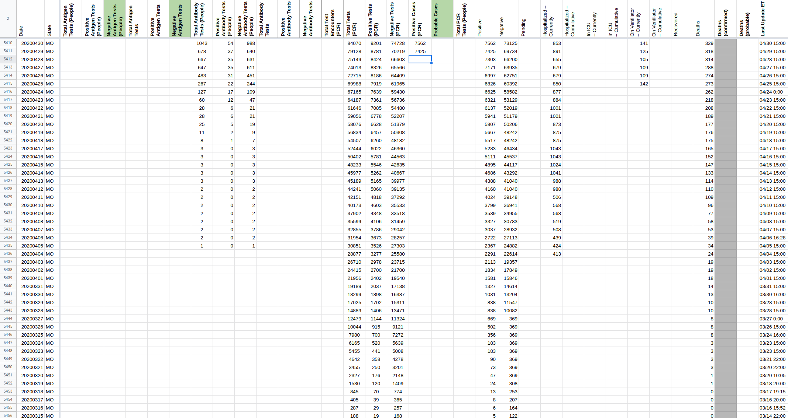
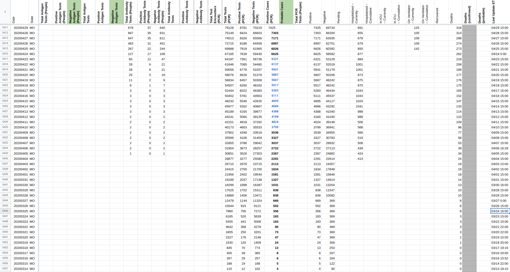

[Historical MO]: Switching to using the "Testing - PCR" tab instead of the "Overview" tab on the dashboard for confirmed cases
Issue number 679
qpmnguyen opened this issue on July 27, 2020 at 9:08 am
Labels Data quality not stale Backfill
State or US: MO
Describe the problem We have been using the number of “lab confirmed cases” in the “Overview” tab of the MO dashboard. However, there were concerns they were lumping positive antibody tests in this figure. We propose to use the “individuals with positive PCR results” on the “Testing - PCR” tab instead. This new dashboard links back to May 21st.
Link to data source ArcGIS query link – hopefully this can be used to backfill
Comments
We don’t have the “dashboard view” time series for confirmed cases, we only have a continuously backfilled series available from the state – which we will not use for backfilling. According to screenshots (e.g., https://covid-tracking-project-data.s3.us-east-1.amazonaws.com/state_screenshots/MO/MO-secondary-20200428-121449.png) they were publishing confirmed case numbers, and this is what we were capturing for positives. Suggestion: fill from positives
{kind=link}
 
MO lists a confirmed number in their secondary screenshot history since 3/28 that could be useful.